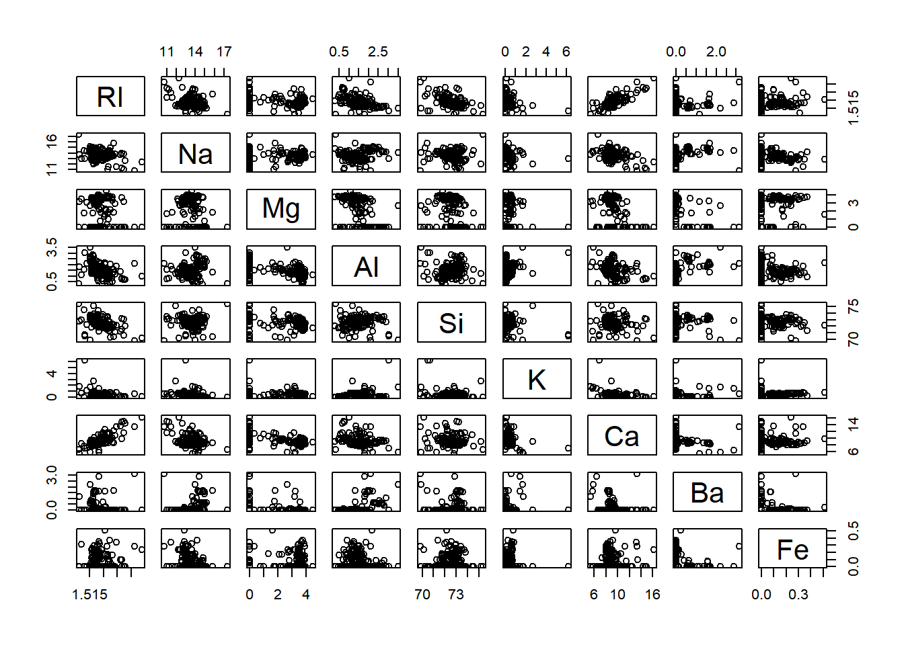
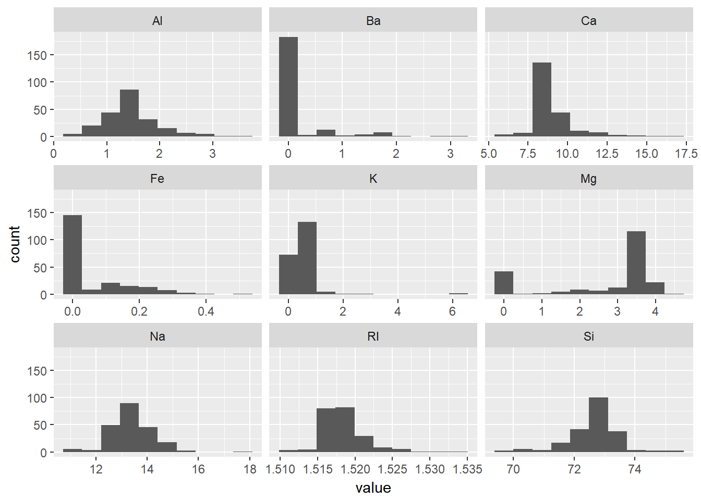
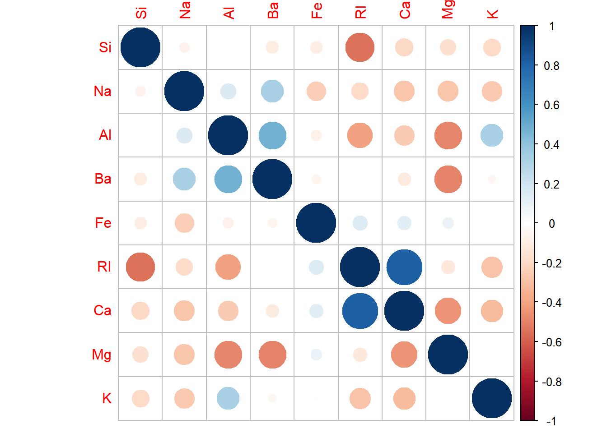

library(mlbench)
data(Glass)
str(Glass)## 'data.frame': 214 obs. of 10 variables:
## $ RI : num 1.52 1.52 1.52 1.52 1.52 ...
## $ Na : num 13.6 13.9 13.5 13.2 13.3 ...
## $ Mg : num 4.49 3.6 3.55 3.69 3.62 3.61 3.6 3.61 3.58 3.6 ...
## $ Al : num 1.1 1.36 1.54 1.29 1.24 1.62 1.14 1.05 1.37 1.36 ...
## $ Si : num 71.8 72.7 73 72.6 73.1 ...
## $ K : num 0.06 0.48 0.39 0.57 0.55 0.64 0.58 0.57 0.56 0.57 ...
## $ Ca : num 8.75 7.83 7.78 8.22 8.07 8.07 8.17 8.24 8.3 8.4 ...
## $ Ba : num 0 0 0 0 0 0 0 0 0 0 ...
## $ Fe : num 0 0 0 0 0 0.26 0 0 0 0.11 ...
## $ Type: Factor w/ 6 levels "1","2","3","5",..: 1 1 1 1 1 1 1 1 1 1 ...# (a) visualizations
pairs(Glass[,-10])
library(tidyverse)
library(ggplot2)
Glass[, -10] %>% gather() %>% head() # check## key value
## 1 RI 1.52101
## 2 RI 1.51761
## 3 RI 1.51618
## 4 RI 1.51766
## 5 RI 1.51742
## 6 RI 1.51596ggplot(gather(Glass[, -10]), aes(value)) +
geom_histogram(bins = 10) +
facet_wrap(~key, scales = "free_x")
library(corrplot)
correlations <- cor(Glass[, -10])
correlations## RI Na Mg Al Si
## RI 1.0000000000 -0.19188538 -0.122274039 -0.40732603 -0.54205220
## Na -0.1918853790 1.00000000 -0.273731961 0.15679367 -0.06980881
## Mg -0.1222740393 -0.27373196 1.000000000 -0.48179851 -0.16592672
## Al -0.4073260341 0.15679367 -0.481798509 1.00000000 -0.00552372
## Si -0.5420521997 -0.06980881 -0.165926723 -0.00552372 1.00000000
## K -0.2898327111 -0.26608650 0.005395667 0.32595845 -0.19333085
## Ca 0.8104026963 -0.27544249 -0.443750026 -0.25959201 -0.20873215
## Ba -0.0003860189 0.32660288 -0.492262118 0.47940390 -0.10215131
## Fe 0.1430096093 -0.24134641 0.083059529 -0.07440215 -0.09420073
## K Ca Ba Fe
## RI -0.289832711 0.8104027 -0.0003860189 0.143009609
## Na -0.266086504 -0.2754425 0.3266028795 -0.241346411
## Mg 0.005395667 -0.4437500 -0.4922621178 0.083059529
## Al 0.325958446 -0.2595920 0.4794039017 -0.074402151
## Si -0.193330854 -0.2087322 -0.1021513105 -0.094200731
## K 1.000000000 -0.3178362 -0.0426180594 -0.007719049
## Ca -0.317836155 1.0000000 -0.1128409671 0.124968219
## Ba -0.042618059 -0.1128410 1.0000000000 -0.058691755
## Fe -0.007719049 0.1249682 -0.0586917554 1.000000000corrplot(correlations, order = "hclust")
# (b) outliers / skewness
# there seems to be an outlier for K and possibly for Fe
library(e1071)
apply(Glass[, -10], 2, skewness) # definitely skewed## RI Na Mg Al Si K
## 1.6027151 0.4478343 -1.1364523 0.8946104 -0.7202392 6.4600889
## Ca Ba Fe
## 2.0184463 3.3686800 1.7298107# (c) relevant transformations
# apply box cox to skewed predictors
library(caret)
RITrans <- BoxCoxTrans(Glass$RI)
RITrans## Box-Cox Transformation
##
## 214 data points used to estimate Lambda
##
## Input data summary:
## Min. 1st Qu. Median Mean 3rd Qu. Max.
## 1.511 1.517 1.518 1.518 1.519 1.534
##
## Largest/Smallest: 1.02
## Sample Skewness: 1.6
##
## Estimated Lambda: -2predict(RITrans, head(Glass$RI))## [1] 0.2838746 0.2829051 0.2824954 0.2829194 0.2828507 0.2824323library(mlbench)
data("Soybean")
str(Soybean)## 'data.frame': 683 obs. of 36 variables:
## $ Class : Factor w/ 19 levels "2-4-d-injury",..: 11 11 11 11 11 11 11 11 11 11 ...
## $ date : Factor w/ 7 levels "0","1","2","3",..: 7 5 4 4 7 6 6 5 7 5 ...
## $ plant.stand : Ord.factor w/ 2 levels "0"<"1": 1 1 1 1 1 1 1 1 1 1 ...
## $ precip : Ord.factor w/ 3 levels "0"<"1"<"2": 3 3 3 3 3 3 3 3 3 3 ...
## $ temp : Ord.factor w/ 3 levels "0"<"1"<"2": 2 2 2 2 2 2 2 2 2 2 ...
## $ hail : Factor w/ 2 levels "0","1": 1 1 1 1 1 1 1 2 1 1 ...
## $ crop.hist : Factor w/ 4 levels "0","1","2","3": 2 3 2 2 3 4 3 2 4 3 ...
## $ area.dam : Factor w/ 4 levels "0","1","2","3": 2 1 1 1 1 1 1 1 1 1 ...
## $ sever : Factor w/ 3 levels "0","1","2": 2 3 3 3 2 2 2 2 2 3 ...
## $ seed.tmt : Factor w/ 3 levels "0","1","2": 1 2 2 1 1 1 2 1 2 1 ...
## $ germ : Ord.factor w/ 3 levels "0"<"1"<"2": 1 2 3 2 3 2 1 3 2 3 ...
## $ plant.growth : Factor w/ 2 levels "0","1": 2 2 2 2 2 2 2 2 2 2 ...
## $ leaves : Factor w/ 2 levels "0","1": 2 2 2 2 2 2 2 2 2 2 ...
## $ leaf.halo : Factor w/ 3 levels "0","1","2": 1 1 1 1 1 1 1 1 1 1 ...
## $ leaf.marg : Factor w/ 3 levels "0","1","2": 3 3 3 3 3 3 3 3 3 3 ...
## $ leaf.size : Ord.factor w/ 3 levels "0"<"1"<"2": 3 3 3 3 3 3 3 3 3 3 ...
## $ leaf.shread : Factor w/ 2 levels "0","1": 1 1 1 1 1 1 1 1 1 1 ...
## $ leaf.malf : Factor w/ 2 levels "0","1": 1 1 1 1 1 1 1 1 1 1 ...
## $ leaf.mild : Factor w/ 3 levels "0","1","2": 1 1 1 1 1 1 1 1 1 1 ...
## $ stem : Factor w/ 2 levels "0","1": 2 2 2 2 2 2 2 2 2 2 ...
## $ lodging : Factor w/ 2 levels "0","1": 2 1 1 1 1 1 2 1 1 1 ...
## $ stem.cankers : Factor w/ 4 levels "0","1","2","3": 4 4 4 4 4 4 4 4 4 4 ...
## $ canker.lesion : Factor w/ 4 levels "0","1","2","3": 2 2 1 1 2 1 2 2 2 2 ...
## $ fruiting.bodies: Factor w/ 2 levels "0","1": 2 2 2 2 2 2 2 2 2 2 ...
## $ ext.decay : Factor w/ 3 levels "0","1","2": 2 2 2 2 2 2 2 2 2 2 ...
## $ mycelium : Factor w/ 2 levels "0","1": 1 1 1 1 1 1 1 1 1 1 ...
## $ int.discolor : Factor w/ 3 levels "0","1","2": 1 1 1 1 1 1 1 1 1 1 ...
## $ sclerotia : Factor w/ 2 levels "0","1": 1 1 1 1 1 1 1 1 1 1 ...
## $ fruit.pods : Factor w/ 4 levels "0","1","2","3": 1 1 1 1 1 1 1 1 1 1 ...
## $ fruit.spots : Factor w/ 4 levels "0","1","2","4": 4 4 4 4 4 4 4 4 4 4 ...
## $ seed : Factor w/ 2 levels "0","1": 1 1 1 1 1 1 1 1 1 1 ...
## $ mold.growth : Factor w/ 2 levels "0","1": 1 1 1 1 1 1 1 1 1 1 ...
## $ seed.discolor : Factor w/ 2 levels "0","1": 1 1 1 1 1 1 1 1 1 1 ...
## $ seed.size : Factor w/ 2 levels "0","1": 1 1 1 1 1 1 1 1 1 1 ...
## $ shriveling : Factor w/ 2 levels "0","1": 1 1 1 1 1 1 1 1 1 1 ...
## $ roots : Factor w/ 3 levels "0","1","2": 1 1 1 1 1 1 1 1 1 1 ...# (a) category frequencies
library(caret)
nearZeroVar(Soybean, saveMetrics = TRUE)## freqRatio percentUnique zeroVar nzv
## Class 1.010989 2.7818448 FALSE FALSE
## date 1.137405 1.0248902 FALSE FALSE
## plant.stand 1.208191 0.2928258 FALSE FALSE
## precip 4.098214 0.4392387 FALSE FALSE
## temp 1.879397 0.4392387 FALSE FALSE
## hail 3.425197 0.2928258 FALSE FALSE
## crop.hist 1.004587 0.5856515 FALSE FALSE
## area.dam 1.213904 0.5856515 FALSE FALSE
## sever 1.651282 0.4392387 FALSE FALSE
## seed.tmt 1.373874 0.4392387 FALSE FALSE
## germ 1.103627 0.4392387 FALSE FALSE
## plant.growth 1.951327 0.2928258 FALSE FALSE
## leaves 7.870130 0.2928258 FALSE FALSE
## leaf.halo 1.547511 0.4392387 FALSE FALSE
## leaf.marg 1.615385 0.4392387 FALSE FALSE
## leaf.size 1.479638 0.4392387 FALSE FALSE
## leaf.shread 5.072917 0.2928258 FALSE FALSE
## leaf.malf 12.311111 0.2928258 FALSE FALSE
## leaf.mild 26.750000 0.4392387 FALSE TRUE
## stem 1.253378 0.2928258 FALSE FALSE
## lodging 12.380952 0.2928258 FALSE FALSE
## stem.cankers 1.984293 0.5856515 FALSE FALSE
## canker.lesion 1.807910 0.5856515 FALSE FALSE
## fruiting.bodies 4.548077 0.2928258 FALSE FALSE
## ext.decay 3.681481 0.4392387 FALSE FALSE
## mycelium 106.500000 0.2928258 FALSE TRUE
## int.discolor 13.204545 0.4392387 FALSE FALSE
## sclerotia 31.250000 0.2928258 FALSE TRUE
## fruit.pods 3.130769 0.5856515 FALSE FALSE
## fruit.spots 3.450000 0.5856515 FALSE FALSE
## seed 4.139130 0.2928258 FALSE FALSE
## mold.growth 7.820896 0.2928258 FALSE FALSE
## seed.discolor 8.015625 0.2928258 FALSE FALSE
## seed.size 9.016949 0.2928258 FALSE FALSE
## shriveling 14.184211 0.2928258 FALSE FALSE
## roots 6.406977 0.4392387 FALSE FALSEsapply(Soybean[,nearZeroVar(Soybean)], table)## $leaf.mild
##
## 0 1 2
## 535 20 20
##
## $mycelium
##
## 0 1
## 639 6
##
## $sclerotia
##
## 0 1
## 625 20# (b) missing data patterns
library(mice)
md.pattern(Soybean) # 562 of 683 have values for all cols## Class leaves date area.dam crop.hist plant.growth stem temp roots
## 562 1 1 1 1 1 1 1 1 1
## 9 1 1 1 1 1 1 1 1 0
## 13 1 1 1 1 1 1 1 1 1
## 6 1 1 1 1 1 1 1 1 0
## 55 1 1 1 1 1 1 1 1 1
## 8 1 1 1 1 1 1 1 1 1
## 14 1 1 1 1 1 1 1 0 1
## 15 1 1 1 1 0 0 0 0 0
## 1 1 1 0 0 0 0 0 0 0
## 0 0 1 1 16 16 16 30 31
## plant.stand precip stem.cankers canker.lesion ext.decay mycelium
## 562 1 1 1 1 1 1
## 9 1 1 1 1 1 1
## 13 1 1 1 1 1 1
## 6 0 1 1 1 1 1
## 55 1 1 1 1 1 1
## 8 1 0 0 0 0 0
## 14 0 0 0 0 0 0
## 15 0 0 0 0 0 0
## 1 0 0 0 0 0 0
## 36 38 38 38 38 38
## int.discolor sclerotia leaf.halo leaf.marg leaf.size leaf.malf
## 562 1 1 1 1 1 1
## 9 1 1 0 0 0 0
## 13 1 1 1 1 1 1
## 6 1 1 0 0 0 0
## 55 1 1 0 0 0 0
## 8 0 0 1 1 1 1
## 14 0 0 0 0 0 0
## 15 0 0 1 1 1 1
## 1 0 0 1 1 1 1
## 38 38 84 84 84 84
## fruit.pods seed mold.growth seed.size leaf.shread fruiting.bodies
## 562 1 1 1 1 1 1
## 9 1 1 1 1 0 1
## 13 0 0 0 0 1 0
## 6 1 1 1 1 0 1
## 55 0 0 0 0 0 0
## 8 1 0 0 0 1 0
## 14 1 1 1 1 0 0
## 15 0 0 0 0 0 0
## 1 0 0 0 0 0 0
## 84 92 92 92 100 106
## fruit.spots seed.discolor shriveling leaf.mild germ hail sever
## 562 1 1 1 1 1 1 1
## 9 1 1 1 0 1 0 0
## 13 0 0 0 1 0 0 0
## 6 1 1 1 0 0 0 0
## 55 0 0 0 0 0 0 0
## 8 0 0 0 0 0 0 0
## 14 0 0 0 0 0 0 0
## 15 0 0 0 0 0 0 0
## 1 0 0 0 0 0 0 0
## 106 106 106 108 112 121 121
## seed.tmt lodging
## 562 1 1 0
## 9 0 0 11
## 13 0 0 13
## 6 0 0 13
## 55 0 0 19
## 8 0 0 20
## 14 0 0 24
## 15 0 0 28
## 1 0 0 30
## 121 121 2337# missing values seem to happen for entire categories, i.e. all leaf cols
md.pattern(Soybean) %>% colnames # col names from most to least filled out## [1] "Class" "leaves" "date"
## [4] "area.dam" "crop.hist" "plant.growth"
## [7] "stem" "temp" "roots"
## [10] "plant.stand" "precip" "stem.cankers"
## [13] "canker.lesion" "ext.decay" "mycelium"
## [16] "int.discolor" "sclerotia" "leaf.halo"
## [19] "leaf.marg" "leaf.size" "leaf.malf"
## [22] "fruit.pods" "seed" "mold.growth"
## [25] "seed.size" "leaf.shread" "fruiting.bodies"
## [28] "fruit.spots" "seed.discolor" "shriveling"
## [31] "leaf.mild" "germ" "hail"
## [34] "sever" "seed.tmt" "lodging"
## [37] ""# (c) handle missing values
soy_data <- Soybean[, -nearZeroVar(Soybean)] # drop 3 cols
preProcValues <- preProcess(soy_data, method = c("knnImpute")) # doesn't work bc of categorical vars?## Warning in pre_process_options(method, column_types): The following pre-
## processing methods were eliminated: 'knnImpute', 'center', 'scale'soy_data_imputed <- mice(soy_data, method = "pmm", seed = 500)##
## iter imp variable
## 1 1 date plant.stand precip temp hail crop.hist area.dam sever seed.tmt germ plant.growth leaf.halo leaf.marg leaf.size leaf.shread leaf.malf stem lodging stem.cankers canker.lesion fruiting.bodies ext.decay int.discolor fruit.pods fruit.spots seed mold.growth seed.discolor seed.size shriveling roots
## 1 2 date plant.stand precip temp hail crop.hist area.dam sever seed.tmt germ plant.growth leaf.halo leaf.marg leaf.size leaf.shread leaf.malf stem lodging stem.cankers canker.lesion fruiting.bodies ext.decay int.discolor fruit.pods fruit.spots seed mold.growth seed.discolor seed.size shriveling roots
## 1 3 date plant.stand precip temp hail crop.hist area.dam sever seed.tmt germ plant.growth leaf.halo leaf.marg leaf.size leaf.shread leaf.malf stem lodging stem.cankers canker.lesion fruiting.bodies ext.decay int.discolor fruit.pods fruit.spots seed mold.growth seed.discolor seed.size shriveling roots
## 1 4 date plant.stand precip temp hail crop.hist area.dam sever seed.tmt germ plant.growth leaf.halo leaf.marg leaf.size leaf.shread leaf.malf stem lodging stem.cankers canker.lesion fruiting.bodies ext.decay int.discolor fruit.pods fruit.spots seed mold.growth seed.discolor seed.size shriveling roots
## 1 5 date plant.stand precip temp hail crop.hist area.dam sever seed.tmt germ plant.growth leaf.halo leaf.marg leaf.size leaf.shread leaf.malf stem lodging stem.cankers canker.lesion fruiting.bodies ext.decay int.discolor fruit.pods fruit.spots seed mold.growth seed.discolor seed.size shriveling roots
## 2 1 date plant.stand precip temp hail crop.hist area.dam sever seed.tmt germ plant.growth leaf.halo leaf.marg leaf.size leaf.shread leaf.malf stem lodging stem.cankers canker.lesion fruiting.bodies ext.decay int.discolor fruit.pods fruit.spots seed mold.growth seed.discolor seed.size shriveling roots
## 2 2 date plant.stand precip temp hail crop.hist area.dam sever seed.tmt germ plant.growth leaf.halo leaf.marg leaf.size leaf.shread leaf.malf stem lodging stem.cankers canker.lesion fruiting.bodies ext.decay int.discolor fruit.pods fruit.spots seed mold.growth seed.discolor seed.size shriveling roots
## 2 3 date plant.stand precip temp hail crop.hist area.dam sever seed.tmt germ plant.growth leaf.halo leaf.marg leaf.size leaf.shread leaf.malf stem lodging stem.cankers canker.lesion fruiting.bodies ext.decay int.discolor fruit.pods fruit.spots seed mold.growth seed.discolor seed.size shriveling roots
## 2 4 date plant.stand precip temp hail crop.hist area.dam sever seed.tmt germ plant.growth leaf.halo leaf.marg leaf.size leaf.shread leaf.malf stem lodging stem.cankers canker.lesion fruiting.bodies ext.decay int.discolor fruit.pods fruit.spots seed mold.growth seed.discolor seed.size shriveling roots
## 2 5 date plant.stand precip temp hail crop.hist area.dam sever seed.tmt germ plant.growth leaf.halo leaf.marg leaf.size leaf.shread leaf.malf stem lodging stem.cankers canker.lesion fruiting.bodies ext.decay int.discolor fruit.pods fruit.spots seed mold.growth seed.discolor seed.size shriveling roots
## 3 1 date plant.stand precip temp hail crop.hist area.dam sever seed.tmt germ plant.growth leaf.halo leaf.marg leaf.size leaf.shread leaf.malf stem lodging stem.cankers canker.lesion fruiting.bodies ext.decay int.discolor fruit.pods fruit.spots seed mold.growth seed.discolor seed.size shriveling roots
## 3 2 date plant.stand precip temp hail crop.hist area.dam sever seed.tmt germ plant.growth leaf.halo leaf.marg leaf.size leaf.shread leaf.malf stem lodging stem.cankers canker.lesion fruiting.bodies ext.decay int.discolor fruit.pods fruit.spots seed mold.growth seed.discolor seed.size shriveling roots
## 3 3 date plant.stand precip temp hail crop.hist area.dam sever seed.tmt germ plant.growth leaf.halo leaf.marg leaf.size leaf.shread leaf.malf stem lodging stem.cankers canker.lesion fruiting.bodies ext.decay int.discolor fruit.pods fruit.spots seed mold.growth seed.discolor seed.size shriveling roots
## 3 4 date plant.stand precip temp hail crop.hist area.dam sever seed.tmt germ plant.growth leaf.halo leaf.marg leaf.size leaf.shread leaf.malf stem lodging stem.cankers canker.lesion fruiting.bodies ext.decay int.discolor fruit.pods fruit.spots seed mold.growth seed.discolor seed.size shriveling roots
## 3 5 date plant.stand precip temp hail crop.hist area.dam sever seed.tmt germ plant.growth leaf.halo leaf.marg leaf.size leaf.shread leaf.malf stem lodging stem.cankers canker.lesion fruiting.bodies ext.decay int.discolor fruit.pods fruit.spots seed mold.growth seed.discolor seed.size shriveling roots
## 4 1 date plant.stand precip temp hail crop.hist area.dam sever seed.tmt germ plant.growth leaf.halo leaf.marg leaf.size leaf.shread leaf.malf stem lodging stem.cankers canker.lesion fruiting.bodies ext.decay int.discolor fruit.pods fruit.spots seed mold.growth seed.discolor seed.size shriveling roots
## 4 2 date plant.stand precip temp hail crop.hist area.dam sever seed.tmt germ plant.growth leaf.halo leaf.marg leaf.size leaf.shread leaf.malf stem lodging stem.cankers canker.lesion fruiting.bodies ext.decay int.discolor fruit.pods fruit.spots seed mold.growth seed.discolor seed.size shriveling roots
## 4 3 date plant.stand precip temp hail crop.hist area.dam sever seed.tmt germ plant.growth leaf.halo leaf.marg leaf.size leaf.shread leaf.malf stem lodging stem.cankers canker.lesion fruiting.bodies ext.decay int.discolor fruit.pods fruit.spots seed mold.growth seed.discolor seed.size shriveling roots
## 4 4 date plant.stand precip temp hail crop.hist area.dam sever seed.tmt germ plant.growth leaf.halo leaf.marg leaf.size leaf.shread leaf.malf stem lodging stem.cankers canker.lesion fruiting.bodies ext.decay int.discolor fruit.pods fruit.spots seed mold.growth seed.discolor seed.size shriveling roots
## 4 5 date plant.stand precip temp hail crop.hist area.dam sever seed.tmt germ plant.growth leaf.halo leaf.marg leaf.size leaf.shread leaf.malf stem lodging stem.cankers canker.lesion fruiting.bodies ext.decay int.discolor fruit.pods fruit.spots seed mold.growth seed.discolor seed.size shriveling roots
## 5 1 date plant.stand precip temp hail crop.hist area.dam sever seed.tmt germ plant.growth leaf.halo leaf.marg leaf.size leaf.shread leaf.malf stem lodging stem.cankers canker.lesion fruiting.bodies ext.decay int.discolor fruit.pods fruit.spots seed mold.growth seed.discolor seed.size shriveling roots
## 5 2 date plant.stand precip temp hail crop.hist area.dam sever seed.tmt germ plant.growth leaf.halo leaf.marg leaf.size leaf.shread leaf.malf stem lodging stem.cankers canker.lesion fruiting.bodies ext.decay int.discolor fruit.pods fruit.spots seed mold.growth seed.discolor seed.size shriveling roots
## 5 3 date plant.stand precip temp hail crop.hist area.dam sever seed.tmt germ plant.growth leaf.halo leaf.marg leaf.size leaf.shread leaf.malf stem lodging stem.cankers canker.lesion fruiting.bodies ext.decay int.discolor fruit.pods fruit.spots seed mold.growth seed.discolor seed.size shriveling roots
## 5 4 date plant.stand precip temp hail crop.hist area.dam sever seed.tmt germ plant.growth leaf.halo leaf.marg leaf.size leaf.shread leaf.malf stem lodging stem.cankers canker.lesion fruiting.bodies ext.decay int.discolor fruit.pods fruit.spots seed mold.growth seed.discolor seed.size shriveling roots
## 5 5 date plant.stand precip temp hail crop.hist area.dam sever seed.tmt germ plant.growth leaf.halo leaf.marg leaf.size leaf.shread leaf.malf stem lodging stem.cankers canker.lesion fruiting.bodies ext.decay int.discolor fruit.pods fruit.spots seed mold.growth seed.discolor seed.size shriveling roots# (a) category frequencies
library(caret)
data(BloodBrain)
# (b) degenerate distributions
# assume this means dist with near zero variance
library(magrittr)
sapply(bbbDescr[,nearZeroVar(bbbDescr)], table)## $negative
##
## 0 1
## 207 1
##
## $peoe_vsa.2.1
##
## 0 6.512799 8.458519 10.88526 18.84208 19.76062 22.30127 25.85486
## 179 2 1 5 3 7 3 1
## 33.18653 35.72591 38.10976 44.60254
## 1 4 1 1
##
## $peoe_vsa.3.1
##
## 0 0.136891 5.682576 5.902359 9.42104 11.58494 17.74249 17.87938
## 168 8 3 1 1 2 3 1
## 18.84208 19.76062 19.89751 23.81727 23.95416 35.72591 35.8628
## 6 6 2 1 1 4 1
##
## $a_acid
##
## 0 2 3
## 201 6 1
##
## $vsa_acid
##
## 0 27.13384 40.70076
## 201 6 1
##
## $frac.anion7.
##
## 0 0.001 0.002 0.007 0.017 0.024 0.691 0.71 0.993 0.997 0.998 0.999
## 191 3 1 1 1 1 1 1 1 2 1 4
##
## $alert
##
## 0 1
## 206 2sapply(bbbDescr[,nearZeroVar(bbbDescr)], table) %>% names()## [1] "negative" "peoe_vsa.2.1" "peoe_vsa.3.1" "a_acid"
## [5] "vsa_acid" "frac.anion7." "alert"# (c) correlations
correlations <- cor(bbbDescr)
highCorr <- findCorrelation(correlations, cutoff = 0.75)
length(highCorr) # yes, strong correlations## [1] 66# use PCA or remove highly correlated predictors
# almost half the vars are highly correlated
# yes, will impact number of predictors for modeling(a) Goal is to classify music into 6 categories and we have 12,495 samples with 191 predictors. The reponse categories are not balanced (mostly classical, metal and blues are rarer). For a larger dataset like this, computational efficiency is more important. Maybe go with a 10-fold CV. Because response variable is not balanced, may need to use stratified random sampling.
(b)
(a) 165 samples and 1,107 predictors. The response is highly skewed and predictors are sparse (15.5% are present) and highly correlated. Because sample size is small, should use 10-fold CV. This has good bias and variance properties.
(b)
mean_r2 <- c(0.444, 0.5, 0.533, 0.545, 0.542, 0.537, 0.534, 0.534, 0.52, 0.507)
tolerance <- (mean_r2 - max(mean_r2))/max(mean_r2)
tolerance## [1] -0.185321101 -0.082568807 -0.022018349 0.000000000 -0.005504587
## [6] -0.014678899 -0.020183486 -0.020183486 -0.045871560 -0.069724771For 10% tolerance, select 2 components.
(c) & (d) If goal is to optimize R^2, then choose the model that has the best R^2 model using bootstrapping. Book recommends to run the complex models first. Then, run simple models and pick the simple model that can get close to the complex model results. Otherwise, models can overfit, be too computationally expensive, and/or not be understood.